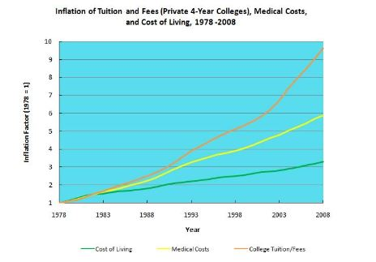
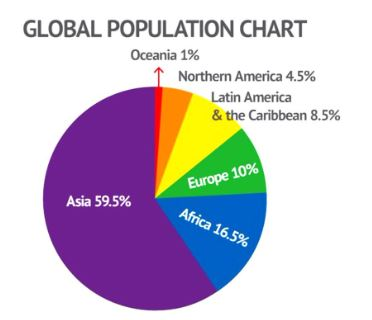
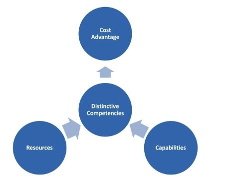
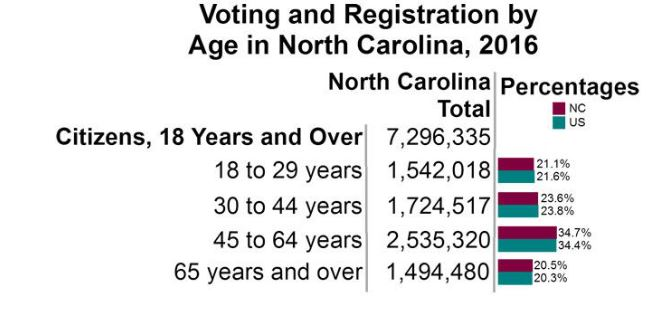
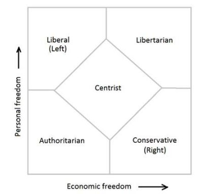

Question 1
College Tuition, Healthcare Costs, and Inflation
Question 2
I. Most of Asia’s population is found in China and India.
II. Africa’s population is over 50% higher than Europe’s population.
III. Latin America and the Caribbean have a birth rate that is twice that of North America
IV. Oceania, North America, Latin America, the Caribbean and Europe account for approximately one-quarter of the global population.
Question 3
Tools to Create Comparative Advantage
Question 4
Voting and Registration by Age in North Carolina, 2016
Question 5
Nolan Chart
1. According to the graph, which of the following best describes the relationship between private college tuition costs and the overall cost of living between 1978 and 2008?
2. Based on the information presented in the graph, what can be concluded about the global population?
3. Based on the figure, what can be concluded?
4. Based on the graph, what age group has the highest representation in the overall elections in 2016?
5. Which political philosophy would be most likely to agree with the statement that economic freedom is essential for political freedom?